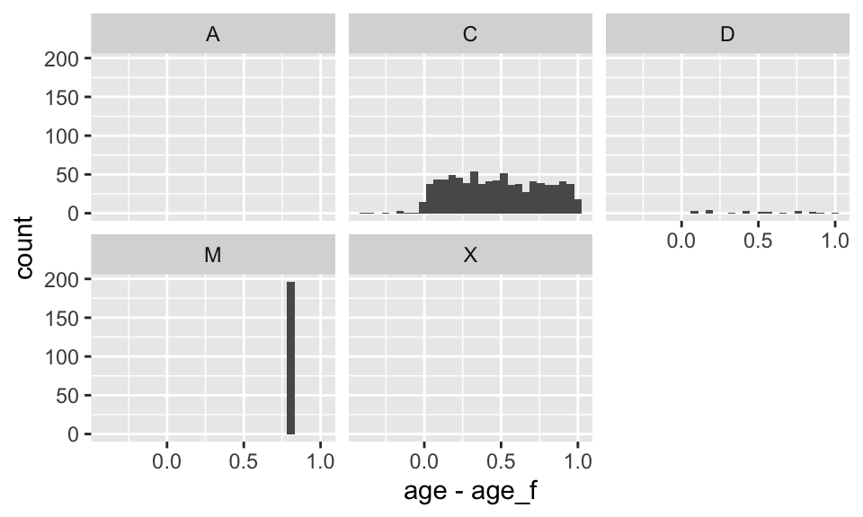
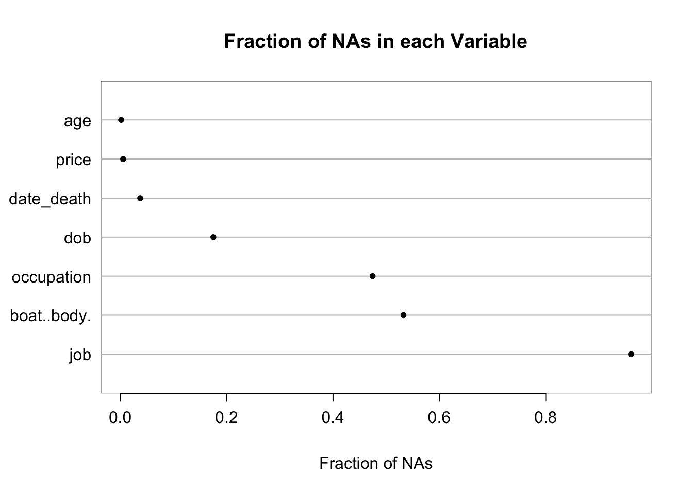
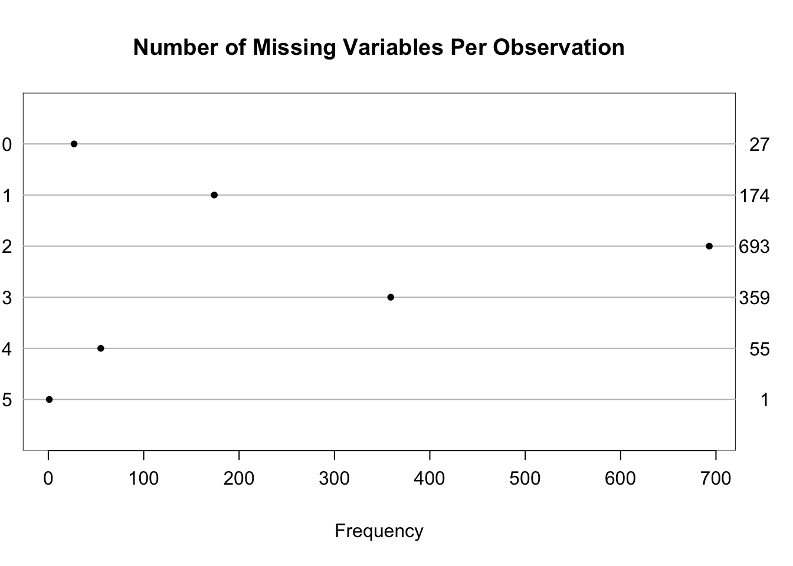
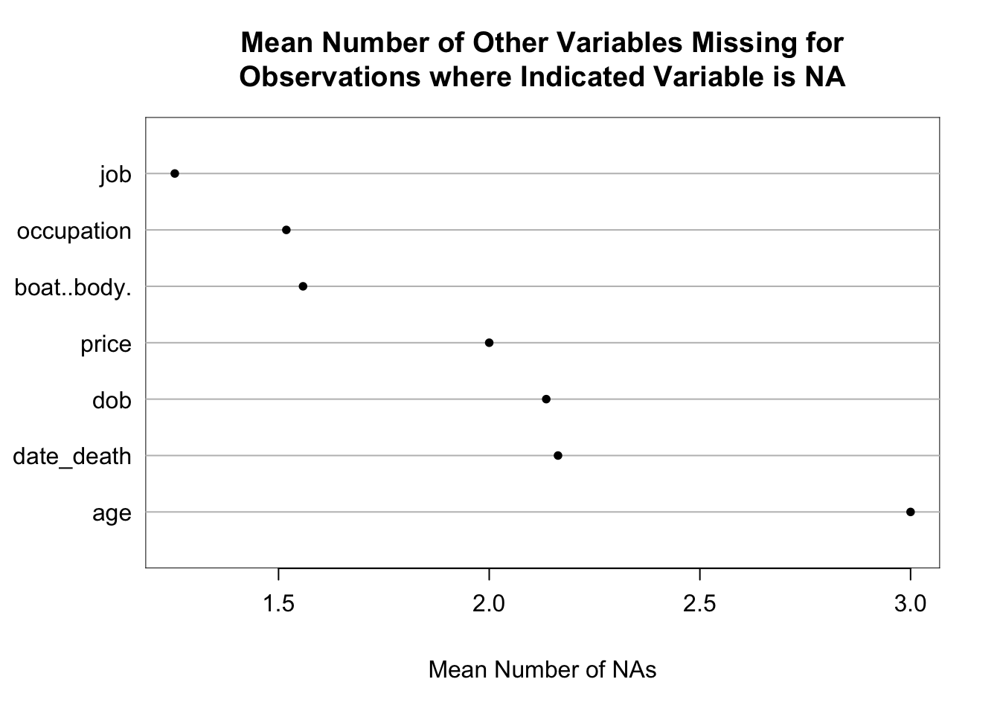
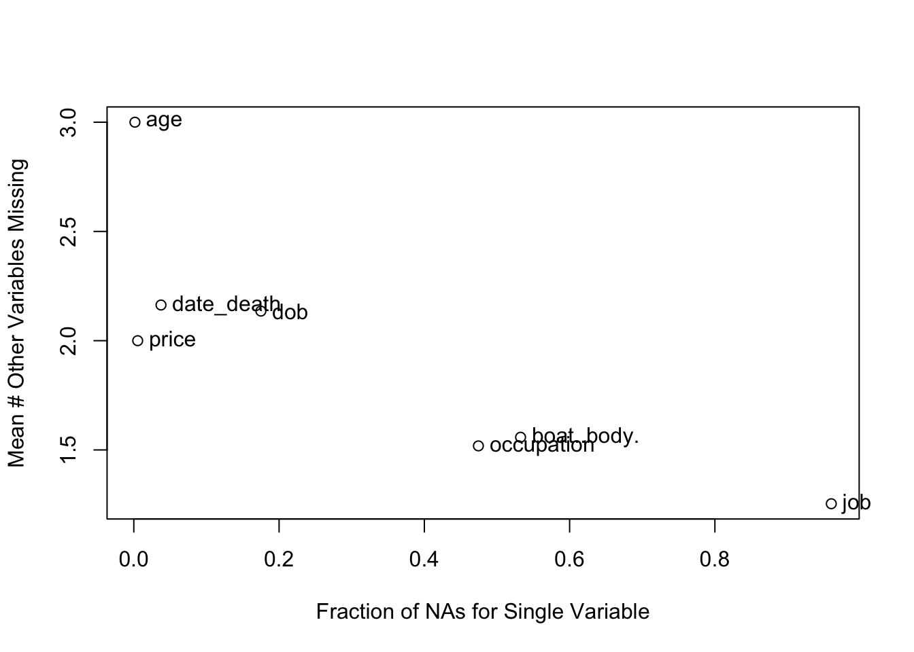
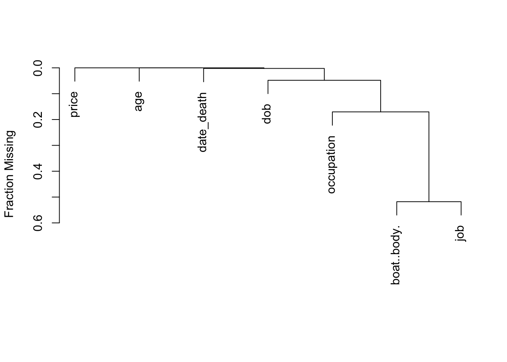
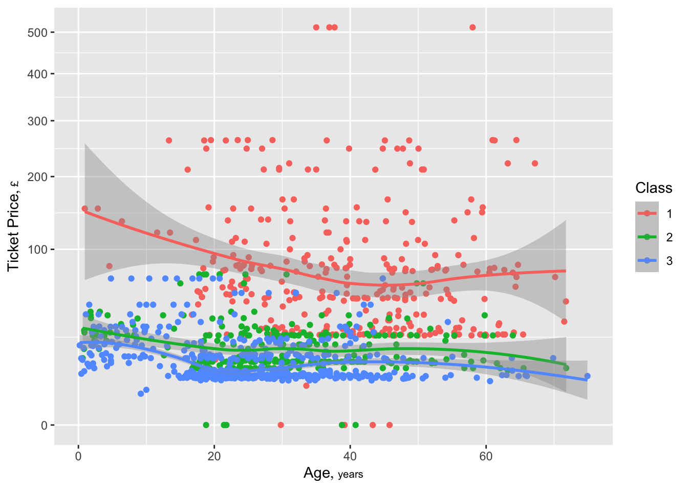
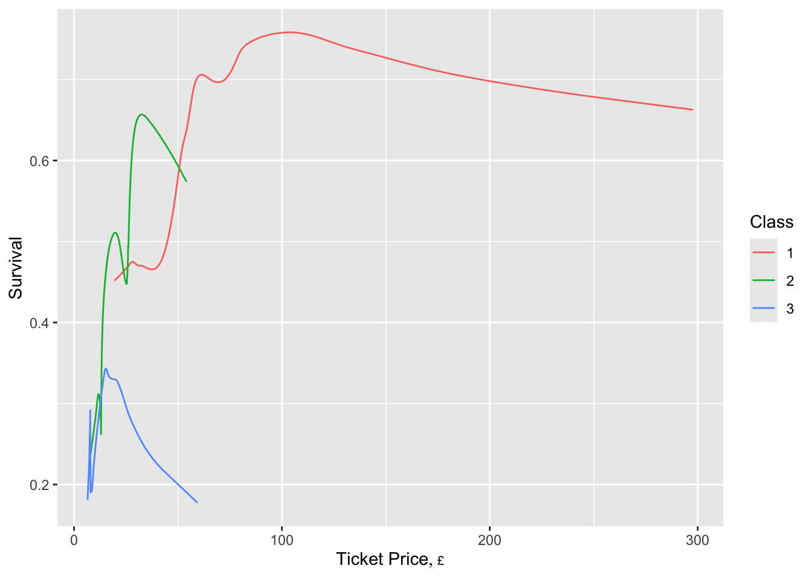
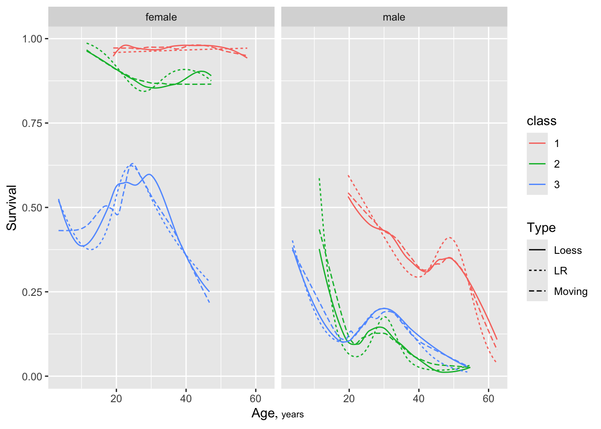
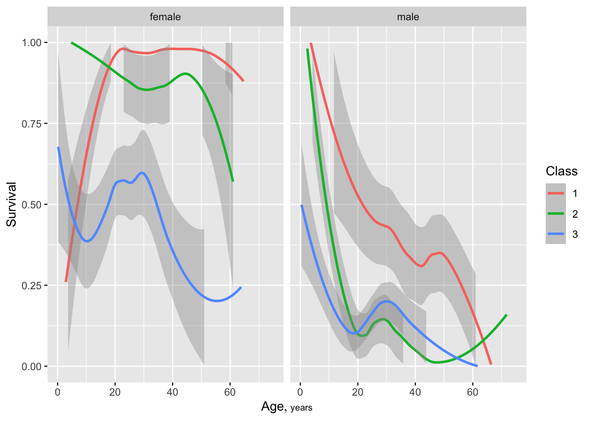

flowchart LR imp[Import] rec[Recode] annot[Annotate] anal[Analysis] uni[Univariate<br>Descriptive<br>Analysis] ds[Data<br>Snapshot] biv[Descriptive<br>Association<br>Analysis] imp --> rec --> annot --> ds --> anal anal --> uni & biv
2 Case Study: The Titanic
2.1 Introduction
This chapter provides a fairly complete case study involving data import, recoding, annotation using metadata from an external file, and descriptive analyses. Many of the techniques used here are only briefly described, and more thorough descriptions are given in the chapters that follow. Marginal notes refer to the pertinent later sections. In addition to base R, we use a number of powerful R packages in this example, including Hmisc (a collection of utilities), data.table (a much better data.frame), ggplot2 (for beautiful graphics), and qreport (utilities for Quarto reports). The case study requires a bit more complex coding than we will see later, to deal with British currency notation in 1912. Don’t worry, coding will get easier for you with time after we build up with simpler examples in later chapters.
2.2 Data
The Regression Modeling Strategies text and course notes contains a detailed case study where survival patterns of passengers on the Titanic were analyzed. That analysis was based on titanic3, an older version of the data on 1309 passengers in which a large number of passengers had missing age. David Beltran del Rio used updated data from Encyclopedia Titanica to create a much improved dataset titanic5 with far fewer missing ages. The data are available at hbiostat.org/data/repo/titanic5.xlsx as a 4-sheet Excel file, and the key analysis sheet for passengers is available at hbiostat.org/data/repo/titanic5.csv
2.3 Importing the Data
The .xlsx file passenger sheet’s date of birth field was not handled correctly by either the R readxl package or the openxlsx package, even when reading the field as a plain text field. Somehow Excel intercepted the way the field was stored in the sheet that made it impossible to read it correctly from the binary file. The sheet had to be opened in Excel itself and saved as a .csv file for the dates not to be distorted. The .csv file is imported below. The readxl package is used only to read the metadata (data dictionary) sheet.
Some non-numeric variables used blanks to denote missing. We systematically change those blanks to true NAs. The R trimws function is used to trim white space from the values so we do not need to distinguish '' from ' ' and ' '.
The prType='html' option makes the Hmisc and rms packages automatically render certain function output in html without needing need results='asis' in chunk headers.
# Load three packages
require(Hmisc)
require(qreport)
require(data.table)
options(prType='html') # make describe & contents print in html
hookaddcap() # make knitr call a function at the end of each chunk
# to automatically add to list of figures (in qreport)
# readxl does not handle URLs so download the Excel file (for metadata)
file <- tempfile()
download.file('https://hbiostat.org/data/repo/titanic5.xlsx',
destfile=file)
t5 <- csv.get('https://hbiostat.org/data/repo/titanic5.csv',
lowernames=TRUE, allow='_')
# Convert blanks in character fields to NAs
g <- function(x)
if(is.character(x)) ifelse(trimws(x) == '', NA, x) else x
t5 <- lapply(t5, g)
# Change to a data table
setDT(t5)
# Copy t5 into d so we can save original data t5 for later
# With just d <- t5, d and t5 would occupy the same memory
# and changes to data.table d would cause t5 to change
d <- copy(t5)
# Rename dob_clean to dob
setnames(d, 'dob_clean', 'dob')
head(d) name_id name sex age class
<labelled> <char> <char> <labelled> <labelled>
1: 28 ALLEN, Miss Elisabeth Walton female 29.00 1
2: 35 ALLISON, Master Hudson Trevor male 0.92 1
3: 36 ALLISON, Miss Helen Loraine female 2.00 1
4: 37 ALLISON, Mr Hudson Joshua Creighton male 30.00 1
5: 38 ALLISON, Mrs Bessie Waldo female 25.00 1
6: 44 ANDERSON, Mr Harry male 47.00 1
ticket joined occupation boat..body. price job survived
<char> <char> <char> <char> <char> <char> <labelled>
1: 24160 Southampton <NA> 2 £211 60s 9d <NA> 1
2: 113781 Southampton <NA> 11 £151 16s <NA> 1
3: 113781 Southampton <NA> <NA> £151 16s <NA> 0
4: 113781 Southampton Businessman [135] £151 16s <NA> 0
5: 113781 Southampton <NA> <NA> £151 16s <NA> 0
6: 19952 Southampton Stockbroker 3 £26 11s <NA> 1
url date_death dob
<char> <labelled> <labelled>
1: /titanic-survivor/elisabeth-walton-allen.html 1967-12-15 1882-10-01
2: /titanic-survivor/trevor-allison.html 1929-08-07 1911-05-07
3: /titanic-victim/loraine-allison.html 1912-04-15 1909-06-05
4: /titanic-victim/hudson-joshua-creighton.html 1912-04-15 1881-12-09
5: /titanic-victim/bessie-waldo-allison.html 1912-04-15 1886-11-14
6: /titanic-survivor/harry-anderson.html 1951-11-23 1864-10-20
age_f_code age_f sibsp parch
<char> <labelled> <labelled> <labelled>
1: C 29 0 0
2: C 1 1 2
3: C 2 1 2
4: C 30 1 2
5: C 25 1 2
6: C 47 0 0# Read metadata
dd <- readxl::read_xlsx(file, sheet='Titanic5_metadata')
# Keep only the regular part of the dictionary
setDT(dd)
dd <- dd[, .(Variable, Description)]
# Change names to lower case and replace blank and [] with . as
# csv.get did. makeNames is in Hmisc
dd[, Variable := makeNames(tolower(Variable), allow='_')]
dd[Variable == 'dob_clean', Variable := 'dob']
# Print variable names and descriptions pasted together to save
# horizontal space
# \t is the tab character
# Use writeLines instead of ordinary print to omit row numbers and
# respect \t
dd[, writeLines(paste0(Variable, '\t: ', Description))]name_id : Unique ID for Passenger / Crew member
name : Full Name (LAST, Title First)
female : Female indicator
male : Male indicator
sex : Sex (text, male/female)
age : Age, numeric (fractional - 10 months = 0.8333)
class.dept : Text field for passenger class or crew department
class : Class of Passenger or Department of Crew - 1,2,3,B,D,E,R,V (see key)
ticket : Ticket number
joined : Port of embarcation
occupation : Job / Career
boat..body. : Boat (rescued survivor), Body (identified victim)
price : Price of ticket, Pounds
job : Second field of career info / company, role, various
survived : Survived indicator
url : Encylopedia Titanic URL filename (starts with http://www.encyclopedia-titanica.org)
last : Last Name
title : Title / Salutation
first : First Name
dob : Date of birth if available
year_birth : Year or Year/Month of birth if available
date_death : Date of death
dob : Date of birth, cleaned, derived when only year or month/year of birth available, supplemented with values from "Age" variable if "DoB" or "Year_Birth" not available
age_f_code : A code to indicate the method by which
age_f : Age "Final" - all ages for which any data exists, see "Age_F_Code" for how it was derived
sibsp : Number of Siblings/Spouses Aboard - obtained from familiar "Titanic3" dataset, merged via "Name_ID" varibale
parch : Number of Parents/Children Aboard - obtained from familiar "Titanic3" dataset, merged via "Name_ID" varibaleNULL2.4 Recoding Data
Start by recoding date of birth from m/d/yyyy format to become a standard R date in yyyy-mm-dd format.
d[, dob := as.Date(dob, '%m/%d/%Y')]Check whether dob is missing if and only if the original integer age is missing. is.na is the R function that returns TRUE/FALSE if a variable’s value is missing (NA) or not.
d[, table(is.na(age), is.na(dob))]
FALSE TRUE
FALSE 1031 227
TRUE 49 2Not quite. dob is missing more often than age. When both are non-missing, check that they are consistent. Stratify by whether/how birth month or day were imputed.
# Compute age in days as of the date of the disaster, then convert to
# fractional years
# as.numeric makes the result a standard numeric variable instead of a
# "difftime" variable
d[, age := as.numeric((as.Date('1912-04-15') - dob) / 365.25)]
ggplot(d, aes(x = age - age_f)) + geom_histogram() +
facet_wrap(~ age_f_code)
Agreement is reasonable. A spike occurs for those passengers who had to have their birth month and day were imputed to Jun 30. Code C is for complete date of birth, and D corresponds to unknown birth day imputed to 15. For passengers with dob present use our newly computed age, and for others use the original integer age.
d[, age := ifelse(is.na(age), age_f, age)]
# Remove old age variables
d[, .q(age_f, age_f_code) := NULL] # .q is in HmiscThe Titanic ticket purchase price needs to undergo some moderately complex recoding to convert from British pounds, shillings, etc. to pounds + fraction of a pound. The prices are in the format £\(x\) \(y\)s \(z\)d for \(x\) pounds, \(y\) shillings (\(\frac{1}{20}\) pound) and \(z\) pennies (\(\frac{1}{12}\) shilling). We need to compute pounds in decimals which is \(x + \frac{y}{20} + \frac{z}{12 \times 20}\). See here for more information.
Start by splitting price with a space as field delimiter. The R strsplit function splits each observation’s string on the specified delimiter and creates a list with length equal to the number of observations. Each element of the list is a vector containing all the sub-fields found during splitting. To keep our R global environment from being cluttered with intermediate variables, and to possibly re-use code later, package the whole conversion in a function called pounds2dec. To avoid repetitive coding within pounds2dec a service function g is written. An argument check in pounds2dec causes various intermediate results to be printed for checking data and logic. The Hmisc package prn function is used to print the code producing intermediate output along with the output. The conversion process allows pounds, shillings, or pennies notation to be out of order within the price character string.
More of the code is devoted to checking the calculations than to doing the calculations.
pounds2dec <- function(price, check=FALSE) {
p <- strsplit(price, ' ')
if(check) prn(table(sapply(p, length)), 'Distribution of number of fields found')
# Get 1st, 2nd, 3rd fields (pad with blanks)
p1 <- sapply(p, function(x) x[1])
p2 <- sapply(p, function(x) if(length(x) < 2) ' ' else x[2])
p3 <- sapply(p, function(x) if(length(x) < 3) ' ' else x[3])
if(check) {
prn(table(p1), 'Frequencies of occurrence of all 1st field values')
prn(table(p2), '2nd field')
prn(table(p3), '3rd field')
prn(table(substring(p1, 1, 1)), 'First letter of 1st field')
prn(table(substring(p2, nchar(p2))), 'Last letter of 2nd field')
prn(table(substring(p3, nchar(p3))), 'Last letter of 3rd field')
}
# Put the 3 fields into a matrix for easy addressing
ps <- cbind(p1, p2, p3)
pdec <- rep(0, length(p1))
# Function to return 0 if a specific currency symbol r is not
# found in x, otherwise removes the symbol and returns the
# remaining characters as numeric
# grepl returns TRUE if r is inside x, FALSE otherwise
# gsub replaces character r with "nothing" (''), i.e., removes r
g <- function(x, r) ifelse(grepl(r, x),
as.numeric(gsub(r, '', x)), 0)
for(j in 1 : 3) {
pj <- ps[, j] # jth sub-field of price for all passengers
pdec <- pdec + g(pj, '£') + g(pj, 's') / 20 + g(pj, 'd') / (12 * 20)
}
# If original price is NA or is either empty or blank
# make sure result is NA
pdec[is.na(price) | trimws(price) == ''] <- NA
if(check) print(data.table(price, pdec)[1:10])
pdec # last object named in function is the returned value
}Apply the function to do the conversion, replacing the price variable in the data table.
d[, price := pounds2dec(price, check=TRUE)]
Distribution of number of fields found table(sapply(p, length))
1 2 3
230 497 582
Frequencies of occurrence of all 1st field values table(p1)
p1
£10 £100 £106 £108 £11 £110 £113 £12 £120 £13 £133 £134 £135 £136 £14 £146
40 2 3 3 11 4 3 20 4 79 2 5 3 2 31 3
£15 £151 £153 £16 £164 £17 £18 £19 £20 £21 £211 £22 £221 £23 £24 £247
42 6 3 17 4 4 9 6 13 22 9 9 4 14 11 8
£25 £26 £262 £263 £27 £28 £29 £3 £30 £31 £32 £33 £34 £35 £36 £37
11 82 7 6 26 4 14 1 17 22 4 4 7 5 4 3
£38 £39 £4 £40 £41 £42 £45 £46 £47 £49 £5 £50 £51 £512 £52 £53
1 19 1 1 4 3 1 8 2 3 1 4 6 4 12 6
£55 £56 £57 £59 £6 £60 £61 £63 £65 £66 £69 £7 £71 £73 £75 £76
8 10 6 4 18 2 6 3 5 2 13 324 4 7 4 5
£77 £78 £79 £8 £80 £81 £82 £83 £86 £89 £9 £90 £91 £93 0
5 5 8 99 3 3 4 8 3 2 32 3 2 4 11
2nd field table(p2)
p2
10s 11d 11s 12s 13s 14s 15s 16s 17s 18s 19s 1d 1s 2s 3d 3s 4d 4s 5d
230 155 4 61 10 51 46 123 18 117 52 14 3 81 44 1 24 2 70 1
5s 60s 6d 6s 7d 7s 8d 8s 9s
65 1 3 14 1 35 1 28 54
3rd field table(p3)
p3
10d 11d 15d 17d 1d 2d 3d 4d 5d 6d 7d 8d 9d
727 22 88 1 1 44 35 41 21 26 152 78 28 45
First letter of 1st field table(substring(p1, 1, 1))
£ 0
1291 11
Last letter of 2nd field table(substring(p2, nchar(p2)))
d s
230 16 1063
Last letter of 3rd field table(substring(p3, nchar(p3)))
d
727 582 price pdec
<char> <num>
1: £211 60s 9d 214.03750
2: £151 16s 151.80000
3: £151 16s 151.80000
4: £151 16s 151.80000
5: £151 16s 151.80000
6: £26 11s 26.55000
7: £77 19s 2d 77.95833
8: £51 9s 7d 51.47917
9: £49 10s 1d 49.50417
10: £247 10s 6d 247.52500The printed output resulting from check=TRUE verifies our data and logic.
2.5 Annotate Dataset
Next bring the external data dictionary into the main data table. The data dictionary did not define units of measurement so we will later add those manually. We start by just adding variable labels to the variables after checking that all the variables in the data have variable names in the data dictionary. We override the label for age that was constructed from the variables from which it was derived, override the labels for sex, price and dob, and add some units of measurement. The data dictionary is displayed in html format using the Hmisc package contents function because of the earlier command options(prType='html').
all(names(d) %in% dd$Variable) # dd$Variable extracts column "Variable" from dd[1] TRUElabs <- dd$Description
names(labs) <- dd$Variable
labs['age'] <- 'Age' # named vector can be addressed with names
labs['price'] <- 'Ticket price' # instead of just integer subscripts
labs['dob'] <- 'Date of birth'
labs['sex'] <- 'Sex'
d <- upData(d, labels=labs,
units=c(age='years', price='£'))Input object size: 462912 bytes; 17 variables 1309 observationsNew object size: 469344 bytes; 17 variables 1309 observationscontents(d)Data frame:d
1309 observations and 17 variables, maximum # NAs:1257| Name | Labels | Units | Class | Storage | NAs |
|---|---|---|---|---|---|
| name_id | Unique ID for Passenger / Crew member | integer | integer | 0 | |
| name | Full Name (LAST, Title First) | character | character | 0 | |
| sex | Sex | character | character | 0 | |
| age | Age | years | numeric | double | 2 |
| class | Class of Passenger or Department of Crew - 1,2,3,B,D,E,R,V (see key) | integer | integer | 0 | |
| ticket | Ticket number | character | character | 0 | |
| joined | Port of embarcation | character | character | 0 | |
| occupation | Job / Career | character | character | 621 | |
| boat..body. | Boat (rescued survivor), Body (identified victim) | character | character | 697 | |
| price | Ticket price | £ | numeric | double | 7 |
| job | Second field of career info / company, role, various | character | character | 1257 | |
| survived | Survived indicator | integer | integer | 0 | |
| url | Encylopedia Titanic URL filename (starts with http://www.encyclopedia-titanica.org) | character | character | 0 | |
| date_death | Date of death | Date | double | 49 | |
| dob | Date of birth | Date | double | 229 | |
| sibsp | Number of Siblings/Spouses Aboard - obtained from familiar "Titanic3" dataset, merged via "Name_ID" varibale | integer | integer | 0 | |
| parch | Number of Parents/Children Aboard - obtained from familiar "Titanic3" dataset, merged via "Name_ID" varibale | integer | integer | 0 |
The data dictionary can be displayed in the RStudio Viewer window by itself when not currently rendering the whole report. When running commands in the R or RStudio console or running them one-at-a-time from the RStudio script editor (very useful for debugging), you can just type contents(d) when options(prType='html') is in effect to display output in the Viewer. The same goes for displaying output of describe().
2.6 Recoding and Annotation in One Step
Instead of using external metadata and a sequence of recoding steps, take advantage of pounds2dec existing as a self-contained function and use the Hmisc upData function to do everything in one step. Go back to the original imported data table t5. We won’t bother to provide labels to all the variables; just the ones we’ll analyze later, and date of birth.
d <- copy(t5)
d <- upData(d,
rename = .q(dob_clean = dob),
dob = as.Date(dob, '%m/%d/%Y'),
age = as.numeric((as.Date('1912-04-15') - dob) / 365.25),
age = ifelse(is.na(age), age_f, age),
price = pounds2dec(price),
drop = .q(age_f, age_f_code),
labels = .q(age = Age,
price = 'Ticket Price',
dob = 'Date of Birth',
sex = Sex,
class = Class,
survived = Survived),
units = .q(age = years, price = '£') )Input object size: 502952 bytes; 19 variables 1309 observations
Renamed variable dob_clean to dob
Modified variable dob
Modified variable age
Modified variable ageModified variable price
Dropped variables age_f,age_f_code
New object size: 464936 bytes; 17 variables 1309 observations2.7 Missing Data
The qreport missChk function is used to create a tabbed report summarizing extent and patterns of NAs. The Clustering of missingness tab shows that boat/body bag and job were mainly missing for the same passengers. In the NA combinations tab, hover over the dots to see a great deal of information.
missChk(d)10 variables have no NAs and 7 variables have NAs
d has 1309 observations (27 complete) and 17 variables (10 complete)
| Minimum | Maximum | Mean | |
|---|---|---|---|
| Per variable | 0 | 1257 | 168.4 |
| Per observation | 0 | 5 | 2.2 |
| 0 | 2 | 7 | 49 | 229 | 621 | 697 | 1257 |
|---|---|---|---|---|---|---|---|
| 10 | 1 | 1 | 1 | 1 | 1 | 1 | 1 |
| 0 | 1 | 2 | 3 | 4 | 5 |
|---|---|---|---|---|---|
| 27 | 174 | 693 | 359 | 55 | 1 |

d




| job | boat..body. | dob | date_death |
|---|---|---|---|
| 1257 | 19 | 5 | 1 |
2.8 Data Overview
The qreport dataOverview function provides a statistical snapshot of the variables in the data table.
dataOverview(d)d has 1309 observations (27 complete) and 17 variables (10 complete)
| Variable | Type | Distinct | Info | Symmetry | NAs | Rarest Value | Frequency of Rarest Value | Mode | Frequency of Mode |
|---|---|---|---|---|---|---|---|---|---|
| name_id | Continuous | 1309 | 1.000 | 1.007 | 0 | 1 | 1 | 1 | 1 |
| name | Nonnumeric | 1308 | 1.000 | 1.000 | 0 | ABBING, Mr Anthony | 1 | KELLY, Mr James | 2 |
| sex | Discrete | 2 | 0.688 | 0.856 | 0 | female | 466 | male | 843 |
| age | Continuous | 946 | 1.000 | 1.167 | 2 | 0.2 | 1 | 23 | 15 |
| class | Discrete | 3 | 0.817 | 0.861 | 0 | 2 | 276 | 3 | 709 |
| ticket | Nonnumeric | 926 | 1.000 | 1.000 | 0 | 10482 | 1 | 2343 | 11 |
| joined | Discrete | 4 | 0.661 | 0.780 | 0 | Belfast | 10 | Southampton | 904 |
| occupation | Nonnumeric | 153 | 0.987 | 0.993 | 621 | Advertising Consultant | 1 | General Labourer | 160 |
| boat..body. | Nonnumeric | 149 | 0.998 | 0.991 | 697 | [1] | 1 | C | 41 |
| price | Continuous | 282 | 1.000 | 6.726 | 7 | 3.171 | 1 | 8.05 | 60 |
| job | Discrete | 3 | 0.430 | 0.673 | 1257 | H&W Guarantee Group | 9 | Servant | 43 |
| survived | Discrete | 2 | 0.708 | 0.882 | 0 | 1 | 500 | 0 | 809 |
| url | Nonnumeric | 1309 | 1.000 | 1.000 | 0 | /titanic-survivor/abelson.html | 1 | /titanic-survivor/abelson.html | 1 |
| date_death | Continuous | 452 | 0.735 | 3.610 | 49 | 1912-07-30 | 1 | 1912-04-15 | 809 |
| dob | Continuous | 901 | 1.000 | 0.885 | 229 | 1837-05-17 | 1 | 1889-06-30 | 13 |
| sibsp | Discrete | 7 | 0.670 | 0.818 | 0 | 5 | 6 | 0 | 891 |
| parch | Discrete | 8 | 0.549 | 0.839 | 0 | 6 | 2 | 0 | 1002 |
|
|
Plot of the degree of symmetry of the distribution of a variable (value of 1.0 is most symmetric) vs. the number of distinct values of the variable. Hover over a point to see the variable name and detailed characteristics.
2.9 Basic Descriptive Statistics
2.10 Univariate and Bivariate Descriptions
The first line of defense is the Hmisc describe function, where the result is rendered as html. This allows inclusion of micro-graphics which are “spike histograms” providing a high-resolution display that can reveal data errors, bimodality, digit preference, and other phenomena. The default output of describe mixes continuous and categorical varibles. Let’s use alternate output that separates the two for better formatting. This also generates interactive sparklines for spike histograms. The results can be fed into the qreport maketabs function to create separate tabs for the two types of variables. To use interactive sparklines (which requires the sparkline package) we must initialize the jQuery javascript dependencies using sparkline::sparkline(0).
sparkline::sparkline(0)des <- describe(d)
maketabs(print(des, 'both'), wide=TRUE)d Descriptives |
|||||||||||
| 5 Continous Variables of 17 Variables, 1309 Observations | |||||||||||
| Variable | Label | Units | n | Missing | Distinct | Info | Mean | pMedian | Gini |Δ| | Quantiles .05 .10 .25 .50 .75 .90 .95 |
|
|---|---|---|---|---|---|---|---|---|---|---|---|
| name_id | Name_ID | 1309 | 0 | 1309 | 1.000 | 1092 | 1092 | 730.3 | 87.4 222.8 547.0 1095.0 1627.0 1963.2 2086.6 | ||
| age | Age | years | 1307 | 2 | 945 | 1.000 | 29.89 | 29.17 | 15.49 | 6.53 15.77 21.00 27.85 38.76 48.81 56.02 | |
| price | Ticket Price | £ | 1302 | 7 | 281 | 1.000 | 33.47 | 19.71 | 38.75 | 7.225 7.650 7.896 14.454 31.275 77.958 132.968 | |
| date_death | Date_Death | 1260 | 49 | 451 | 0.735 | 1927-11-29 | -16681 | 8424 | 1912-04-15 1912-04-15 1912-04-15 1912-04-15 1945-01-31 1968-12-31 1976-10-03 | ||
| dob | Date of Birth | 1080 | 229 | 900 | 1.000 | 1881-12-22 | -31930 | 5960 | 1854-06-07 1862-06-30 1872-09-23 1883-11-05 1891-06-30 1898-10-25 1907-06-30 | ||
d Descriptives |
||||||||||
| 12 Categorical Variables of 17 Variables, 1309 Observations | ||||||||||
| Variable | Label | n | Missing | Distinct | Info | Sum | Mean | pMedian | Gini |Δ| | |
|---|---|---|---|---|---|---|---|---|---|---|
| name | 1309 | 0 | 1308 | ABBING, Mr Anthony - ZIMMERMANN, Mr Leo Min/Max/Mean Width: 10 / 61 / 23.4 Mode:KELLY, Mr James (n=2) |
||||||
| sex | Sex | 1309 | 0 | 2 | ||||||
| class | Class | 1309 | 0 | 3 | 0.817 | 2.294 | 2.5 | 0.8697 | ||
| ticket | 1309 | 0 | 926 | 10482 - SW/PP 751 Min/Max/Mean Width: 1 / 10 / 5.4 Mode:2343 (n=11) |
||||||
| joined | 1309 | 0 | 4 | |||||||
| occupation | 688 | 621 | 152 | Advertising Consultant - Writer Min/Max/Mean Width: 4 / 32 / 11.4 Mode:General Labourer (n=160) |
||||||
| boat..body. | 612 | 697 | 148 | [1] - D Min/Max/Mean Width: 1 / 6 / 2.1 Mode:C (n=41) |
||||||
| job | 52 | 1257 | 2 | |||||||
| survived | Survived | 1309 | 0 | 2 | 0.708 | 500 | 0.382 | |||
| url | 1309 | 0 | 1309 | /titanic-survivor/abelson.html - /titanic-victim/zahie-maria-khalil.html Min/Max/Mean Width: 28 / 63 / 39.3 |
||||||
| sibsp | 1309 | 0 | 7 | 0.670 | 0.4989 | 0.5 | 0.777 | |||
| parch | 1309 | 0 | 8 | 0.549 | 0.385 | 0 | 0.6375 | |||
The spike histogram for
name_id is uneven because of rounding the IDs, which are not consecutive integers.describe also has a plot method. For continuous variables the new information it adds to the small spike histograms is color coding for the number of missing values, and a detailed overall statistical summary. For categorical variables frequencies are displayed using a dot chart. The plots are rendered as interactive graphics using plotly. Hover over points to see more details.
options(grType='plotly') # makes plot() use plotly
p <- plot(des) # stores two plot objects in p
p$Categorical # picks off the first onetitanic5
p$Continuoustitanic5 with details as hover text. Hover over the leftmost spike to see a detailed statistical summary for the variable.
To automatically make a Categorical and a Continuous tab in Quarto to display these figures, you can just run the qreport maketabs command: maketabs(p).
2.10.1 Bivariate Descriptions
Let’s describe two-way relationships between some of the passenger characteristics. In particular we’d like to know the age and ticket price distribution by sex and passenger class. But start with a simple dot chart showing the proportion of males by passenger class. Plots are interactive, rendered by plotly.
plot(summaryM(sex ~ class, data=d))Hmisc::summaryM
Now draw extended box plots. Hovering over elements of the boxes reveals their meaning.
# Note the use of variable labels and units
plot(summaryM(age + price ~ sex, data=d))plot(summaryM(age + price ~ class, data=d))First-class passengers are older. They have accumulated more money to be able to purchase the high-priced tickets. There is substantial variation in ticket prices only for first-class passengers, and a few first-class passengers paid less than a few third-class passengers.
Make a scatterplot of age vs. ticket price, and add a nonparametric smoother to the plot. The ggplot2 package is used. class is treated as a categorical variable using factor(class). price is plotted on a square root scale to make lower ranges more visible. Labels and units are extracted from data table d by the Hmisc hlabs function so are easily used in the plot.
# ggplot2 complained about class having a label, so we create a new
# data.table where it doesn't
w <- copy(d)
w[, class := as.integer(class)]
ggplot(w, aes(x=age, y=price, color=factor(class))) +
geom_point() + geom_smooth() +
scale_y_continuous(trans='sqrt') +
guides(color=guide_legend(title='Class')) +
hlabs(age, price)
2.11 Associations of Passenger Characteristics With Survival
In the Titanic disaster, survival is synonymous with getting chosen for a lifeboat. Detailed descriptive and formal analysis of such associations appeared in RMS using the older titanic3 dataset, which had a good many missing ages, and the ticket price was not converted to analyzable form so it was ignored. Here we update the descriptive analyses using titanic5. One of the key new questions relates to passenger class and ticket price. It was demonstrated with titanic3 that the chance of surviving declined steadily with increasing passenger class. Third class passengers were situated in the ship’s hold, making the trip to the deck to attempt to get on a lifeboat more difficult. Let’s see if the ticket price contains further information about survival tendencies once we control for passenger class.
Start by estimating the probability of survival as a function of inherently discrete variables sex and passenger class. Separately we compute proportions surviving by sex, then by class, then by both, using basic data.table package operations. Then the data.table cube function is used to do all of that at once.
# Create a function that drops NAs when computing the mean
# Note that the mean of a 0/1 variable is the proportion of 1s
mn <- function(x) mean(x, na.rm=TRUE)
# Create a function that counts the number of non-NA values
Nna <- function(x) sum(! is.na(x))
# This is for generality; there are no NAs in these examples
d[, .(Proportion=mn(survived), N=Nna(survived)), by=sex] # .N= # obs in by group sex Proportion N
<labelled> <num> <int>
1: female 0.7274678 466
2: male 0.1909846 843d[, .(Proportion=mn(survived), N=Nna(survived)), by=class] class Proportion N
<labelled> <num> <int>
1: 1 0.6203704 324
2: 2 0.4275362 276
3: 3 0.2552891 709d[, .(Proportion=mn(survived), N=Nna(survived)), by=.(sex,class)] sex class Proportion N
<labelled> <labelled> <num> <int>
1: female 1 0.9652778 144
2: male 1 0.3444444 180
3: male 2 0.1411765 170
4: female 2 0.8867925 106
5: male 3 0.1521298 493
6: female 3 0.4907407 216cube(d, .(Proportion=mn(survived), N=Nna(survived)), by=.q(sex, class), id=TRUE) grouping sex class Proportion N
<int> <labelled> <labelled> <num> <int>
1: 0 female 1 0.9652778 144
2: 0 male 1 0.3444444 180
3: 0 male 2 0.1411765 170
4: 0 female 2 0.8867925 106
5: 0 male 3 0.1521298 493
6: 0 female 3 0.4907407 216
7: 1 female NA 0.7274678 466
8: 1 male NA 0.1909846 843
9: 2 <NA> 1 0.6203704 324
10: 2 <NA> 2 0.4275362 276
11: 2 <NA> 3 0.2552891 709
12: 3 <NA> NA 0.3819710 1309This can be done more cleanly if we create a function that computes both the proportion surviving and the number of non-NAs in survival status.
g <- function(x) list(Proportion=mean(x, na.rm=TRUE), N=sum(! is.na(x)))
d[, g(survived), by=sex] sex Proportion N
<labelled> <num> <int>
1: female 0.7274678 466
2: male 0.1909846 843d[, g(survived), by=class] class Proportion N
<labelled> <num> <int>
1: 1 0.6203704 324
2: 2 0.4275362 276
3: 3 0.2552891 709d[, g(survived), by=.(sex, class)] sex class Proportion N
<labelled> <labelled> <num> <int>
1: female 1 0.9652778 144
2: male 1 0.3444444 180
3: male 2 0.1411765 170
4: female 2 0.8867925 106
5: male 3 0.1521298 493
6: female 3 0.4907407 216cube(d, g(survived), by=.q(sex, class)) sex class Proportion N
<labelled> <labelled> <num> <int>
1: female 1 0.9652778 144
2: male 1 0.3444444 180
3: male 2 0.1411765 170
4: female 2 0.8867925 106
5: male 3 0.1521298 493
6: female 3 0.4907407 216
7: female NA 0.7274678 466
8: male NA 0.1909846 843
9: <NA> 1 0.6203704 324
10: <NA> 2 0.4275362 276
11: <NA> 3 0.2552891 709
12: <NA> NA 0.3819710 1309The Hmisc package’s movStats function can also compute summaries for discrete predictors as can a host of other functions.
movStats(survived ~ sex, discrete=TRUE, data=d) sex Proportion N
<labelled> <num> <int>
1: female 0.7274678 466
2: male 0.1909846 843movStats(survived ~ class, discrete=TRUE, data=d) class Proportion N
<labelled> <num> <int>
1: 1 0.6203704 324
2: 2 0.4275362 276
3: 3 0.2552891 709movStats(survived ~ sex + class, discrete=TRUE, data=d) sex Proportion N class
<labelled> <num> <int> <char>
1: female 0.9652778 144 1
2: male 0.3444444 180 1
3: female 0.8867925 106 2
4: male 0.1411765 170 2
5: female 0.4907407 216 3
6: male 0.1521298 493 3Now we use movStats for what it is mainly intended to do: estimate the relationship between a continuous X and a response Y, without assuming a functional form. movStats does that by using overlapping moving windows, which is a quite general approach that can estimate means (which are proportions when Y=0/1), medians and other quantiles, measures of variability, censored survival estimates, and any other quantities for which the user provides a basic estimation function. Moving window estimates, which by default include 15 observations on either side of the target point, are somewhat noisy, but passing the moving statistics through a second-stage nonparametric smoother results in smooth estimates.
movStats can also estimate smooth relationships using parametric, semiparametric, and non-parametric regression directly on the raw data, for the case where means or proportions are involved. While doing so we also stratify on discrete passenger characteristics. Start by only computing only moving proportions, which are estimates of the probability of survival.
The Hmisc hlab function (like the hlabs function) pulls metadata out of dataset d by default.
# base=9.5 uses more smoothing than the default
# pr='margin' makes movStats put information about moving windows
# in the right margin, using Quarto markup
z <- movStats(survived ~ price + class, bass=9.5, data=d, pr='margin')| N | Mean | Min | Max | xinc |
|---|---|---|---|---|
| 322 | 30.9 | 25 | 31 | 1 |
| 276 | 30.8 | 25 | 31 | 1 |
| 704 | 30.9 | 25 | 31 | 3 |
ggplot(z, aes(x=price, y=`Moving Proportion`, col=factor(class))) +
geom_line() + guides(color=guide_legend(title='Class')) +
xlab(hlab(price)) + ylab('Survival')
It appears that the chance of getting on a lifeboat increased with increasing ticket price, for 1st and 2nd class.
In the next example we stratify by two variables, and in addition to the moving statistic we compute loess nonparametric estimates, and also use the gold standard smoother for Y=0/1: binary logistic regression (LR) without assuming linearity in the continuous predictor (age). A restricted cubic spline with 5 default knot locations is used to model the age effect, and the LR fits are run separately by the six age-class combinations. melt=TRUE tells movStats to “melt” the data table so that multiple types of estimates become multiple observations. This makes it easy to handle in ggplot2.
z <- movStats(survived ~ age + sex + class, bass=9.5,
lrm=TRUE, loess=TRUE,
data=d, melt=TRUE, pr='margin')| N | Mean | Min | Max | xinc | |
|---|---|---|---|---|---|
| female::1 | 144 | 30.7 | 25 | 31 | 1 |
| male::1 | 180 | 30.7 | 25 | 31 | 1 |
| female::2 | 106 | 30.5 | 25 | 31 | 1 |
| male::2 | 170 | 30.7 | 25 | 31 | 1 |
| female::3 | 216 | 30.8 | 25 | 31 | 1 |
| male::3 | 491 | 30.9 | 25 | 31 | 2 |
ggplot(z, aes(x=age, y=survived, col=class, linetype=Type)) +
geom_line() + facet_wrap(~ sex) +
xlab(hlab(age)) + ylab('Survival')
Repeat the last plot using a nonparametric smoother built-in to ggplot2, which also computes approximate 0.95 confidence bands.
ggplot(d, aes(x=age, y=survived, col=factor(class))) + geom_smooth() +
facet_wrap(~ sex) +
ylim(0, 1) + xlab(hlab(age)) + ylab('Survival') +
guides(color=guide_legend(title='Class'))